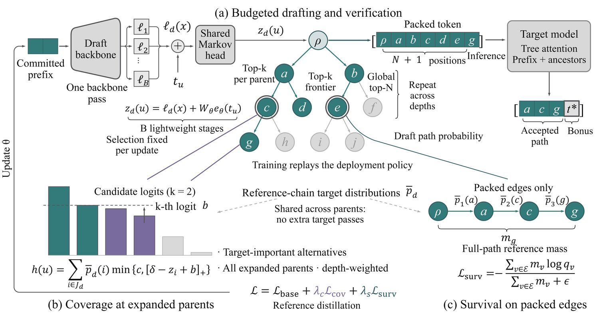

性能数字来自所引论文或官方报告，实验条件随引用标注；源码分析与独立性能复现分别说明。更新记录保留原快照日期。
未标注提交版本的源码节选用于解释机制，省略项需结合原仓库补全。配套 标准库数值示例可用 Python 独立运行，覆盖核化注意力递推、Gated DeltaNet、AWQ、量化编码与单位置拒绝采样；它不验证论文训练结果或 GPU 性能。
接受与成本 → 蒸馏与自投机 → 训练时测试 → 并行/在策训练 → 实现对应。相关发布记录见“近期进展”。
单位置接受率为 Σmin(p,q)=1−TV(p,q)，但优化一轮产出还要考虑前缀存活和继续价值。条件接受率恒定时，第 k 个候选被实际提交的概率仍会因前面拒绝而下降；“位置接受率不衰减”与“联合存活下降”并不矛盾。
| 路线 | 它改变什么 | 何时要重新判断 |
|---|---|---|
| 数据对齐 | DistillSpec 学生 on-policy，HASS 对齐训练/解码上下文 | 区分教师生成、学生自采样与特征反馈 |
| 结构与目标 | 早期 MTP 并列预测；DeepSeek-V3 顺序式 MTP | 共享头、训练目标、草稿开销不可混同 |
| 部署调度 | DSpark 条件置信度→前缀连乘→长度决策 | 静态阈值只是基线；非前瞻条件防选择偏差 |
值得做的研究：在相同训练和推理预算下，收益究竟来自数据、草稿容量、目标函数还是 kernel？报告达到盈亏平衡所需服务 token 数，而非只列最高加速比。
以上条目已于 2026-11-01 对照 arXiv 题名、作者与首发日期；比较设计选择，不作跨论文性能排名。
位置权重结合平滑重叠度、前缀连乘与继续价值，配合 Rényi-½ 散度做损失：τ 4.50→4.57（T=0），比 D-PACE 至多 +5%、比 DFlash 至多 +11%。
→ 跳到详情外部语料上的蒸馏收益 +14.4%/+18.0%，换成目标模型再生成语料后只剩 +3.7%/+3.6%、gate 归零，“草稿语料必须目标自生成”再添实证。
→ 跳到详情延迟感知的结构化剪枝+蒸馏，直接从目标模型剪出草稿，最高剪掉 92%。
→ 跳到详情对着活 vLLM 验证器在线训练草稿，checkpoint 免转换直接被 vllm serve 加载；2026-10-22 合入 main，v0.33 起搭载（晚于 v0.32.0）。
→ 跳到详情如果你还不了解投机解码（Speculative Decoding），一句话：让一个小而快的"草稿模型"先一口气写几个词，再让大模型一次前向把它们全部批改，只要批改通过就一并采纳。因为大模型解码的瓶颈不是计算而是"每生成一个 token 都要把全部权重从显存读一遍"，所以"读一遍、产出多个 token"天然省时间。而且经过精心的拒绝采样设计，输出的概率分布和 大模型直接生成完全一致（无损）。本站《投机解码全景》已用 50 行代码验证过这个"无损"性质，本文不再重复。
2022–2023 年的奠基工作（Leviathan 等人[2]、Chen 等人[3]）有一个鲜明的口号：免训练，拿来现成的小模型当草稿，不改架构、不重训，就能 2–3 倍加速。但免训练也意味着一个天花板：加速比完全取决于"你恰好能找到的小模型和大模型有多像"。而"像不像"这件事，恰好是训练最擅长改变的。
把投机解码的期望加速比写出来，一切就清楚了。设草稿逐 token 接受率为 α，每轮起草 γ 个 token，草稿一步的耗时是大模型的 c 倍：
这个公式给了后训练三个明确的"旋钮"，也就定义了整个领域此后四年的技术地图：
α = Σ min(p, q)）。于是有了草稿蒸馏（DistillSpec）、解码头训练（Medusa / EAGLE），这就是本文的主线。"greater improvements might be obtained via custom approximation models… with custom training procedures (e.g., standard distillation with soft targets from Mp, or optimizing Mq for α directly)." 更大的改进或许来自定制草稿模型……配合定制的训练流程（例如用目标模型 Mp 的软目标做标准蒸馏，或者直接以接受率 α 为优化目标训练草稿 Mq）。 — Leviathan, Kalman & Matias,《Fast Inference from Transformers via Speculative Decoding》讨论节, ICML 2023 · arXiv:2211.17192（2022-11 首发，2023-05 修订）[2]
有趣的是，奠基论文在"未来工作"里预言的两件事（蒸馏草稿、直接优化接受率）分别在 2023 年（DistillSpec[6]）和 2026 年（LK Losses[24] 等）成为了现实。本文就沿着这条"从免训练到深度后训练"的路线，讲清每个阶段的核心思想、数学原理与代码实现。
自回归解码时，生成每个 token 都要做一次完整前向。对于 70B 模型，即使一次前向只算一个 token 的矩阵乘（几乎不费算力），也必须把 140GB 的权重从 HBM 显存读一遍。现代 GPU 算力冗余、带宽紧张，解码阶段 GPU 的利用率常常只有个位数百分比。投机解码的本质，就是用这些闲置算力去"提前算好"未来几个位置的条件分布，从而把"读一遍权重"的产出从一个 token 变成多个。
设目标模型在某位置给出下一个 token 的分布 p(x)，草稿模型给出 q(x)。投机采样（speculative sampling）三步走：
q(x) 采样出候选 token x ~ q（贪心解码时取 argmax）；min(1, p(x)/q(x)) 接受 x；norm(max(0, p − q)) 重新采样一个 token。q(x)·min(1, p(x)/q(x)) = min(p(x), q(x))；"被拒绝但重采到 x"的概率是 (1 − Σ min(p,q)) · norm(max(0, p−q))(x) = p(x) − min(p(x), q(x))（当 p(x) > q(x) 时）。两者相加恰好等于 p(x)，所以每个 token 的最终分布严格等于目标模型分布，与草稿好坏无关。草稿只影响速度，不影响分布。上面的推导顺带给出了一个漂亮的结果。单个 token 的接受概率就是两条分布"重叠部分的面积"：
这个公式是整个"后训练"领域的理论基石，值得多看两眼：
q 逼近 p，这就是"蒸馏"的数学动机；Σ min(p,q) 作为损失直接优化很难（min 几乎处处可导、折点可取次梯度；直接优化还需考虑数值稳定与序列前缀存活目标），所以实际训练都用相关的分布匹配目标（L1 本身也不光滑）：前向 KL、反向 KL、JS 散度、L1 距离等。DistillSpec[6] 系统研究了选哪个；DeepSpec 训练 DSpark 时直接用 |softmax(draft) − softmax(target)|₁（第 8.2 节）；实验 1 · 手工设定两个分布，验证接受率 = Σ min(p,q)，并直观感受"草稿越像目标、接受越多"（完整可跑版本见本站《投机解码全景》§2.3）：
p = {"爱": 0.50, "是": 0.30, "在": 0.10, "了": 0.05, "有": 0.05} # 目标模型
q = {"爱": 0.60, "是": 0.20, "在": 0.10, "了": 0.05, "有": 0.05} # 草稿模型（有点像）
alpha = sum(min(p[k], q[k]) for k in p) # 理论接受率 = Σ min(p,q)
# = 0.50 + 0.20 + 0.10 + 0.05 + 0.05 = 0.90 → 90% 的草稿会被接受
# 若把 q 改成与 p 完全一致，alpha = 1.0；完全不一致（0.5 概率给错词）→ alpha 迅速跌落在逐位置接受率独立同分布的简化模型中，α=0.9、γ=7 时，每轮期望产出 E≈5.695（含修正/bonus token）。这不是 5.695× 墙钟加速：若每个草稿的相对成本 c=0.1、验证等于一次普通目标前向，则 S≈5.695/(1+7×0.1)=3.35×。α=0.5 时是否变慢也取决于整轮成本。一般情况用 E=ΣPr(前 i 个候选均接受)，而非把实测平均 α 无条件代入几何级数。原论文 §3。
L = LRL + λ·Ldraft），草稿随策略在线进化，8B–122B 模型端到端训练提速 1.16–1.88×。"训练几个头来预测未来 token"这件事，比投机解码本身早了四年。Stern、Shazeer 和 Uszkoreit 在 2018 年就提出了完整的"预测—验证—接受"三段式：训练 k 个辅助预测头，各自独立猜出未来 k 个位置，再用原模型并行打分、回退到最长被验证的前缀：
"we propose a novel blockwise parallel decoding scheme in which we make predictions for multiple time steps in parallel then back off to the longest prefix validated by a scoring model. … achieving iteration reductions of up to 2x over a baseline greedy decoder with no loss in quality, or up to 7x in exchange for a slight decrease in performance." 我们提出一种新的块并行解码方案：并行地对多个时间步做出预测，然后回退到由打分模型验证通过的最长前缀。……与基线贪心解码器相比，在无质量损失的情况下迭代次数最多减少 2 倍，若允许性能轻微下降则最多可达 7 倍。 — Stern, Shazeer & Uszkoreit,《Blockwise Parallel Decoding for Deep Autoregressive Models》, NeurIPS 2018 · arXiv:1811.03115（2018-11-07）[1]
它的三个遗产一直流传至今：① 多头预测的训练目标（在原模型输出层后插一个 k 输出的前馈层，对每个位置的"未来 k 个 token"都算交叉熵，这正是六年后 Medusa 头[7]和 DeepSeek-V3 MTP 模块[13]的结构原型）；② 并行验证（Transformer 能一次给所有候选位置打分）；③ 前缀接受。它的局限同样启发后人：只支持贪心解码（验证即精确匹配），且需要额外训练，所以 2022 年 Leviathan 等人重新发明这套框架时，最大的卖点恰恰是"免训练 + 任意采样下严格无损"。
Leviathan 等人[2]（Google，2022-11）与 Chen 等人[3]（DeepMind，2023-02）几乎同时提出了投机采样（speculative sampling）：
"Our method can accelerate existing off-the-shelf models without retraining or architecture changes. We demonstrate it on T5-XXL and show a 2X-3X acceleration compared to the standard T5X implementation, with identical outputs." 我们的方法无需重新训练或修改架构即可加速现成模型。我们在 T5-XXL 上验证，相比标准 T5X 实现获得 2–3 倍加速，且输出完全相同。 — Leviathan, Kalman & Matias,《Fast Inference from Transformers via Speculative Decoding》, ICML 2023 · arXiv:2211.17192（2022-11 首发）[2]
但"免训练"的代价写在 α = Σ min(p, q) 里：你只能从"恰好存在的小模型"里挑草稿。Leviathan 等的实验里，把 T5-Small（77M）接在 T5-XXL（11B）上 α≈0.5–0.75（随任务与采样温度浮动）；而换成一个 bigram 表查询模型 α 只有约 0.2。草稿与目标不是"一个模型家族"时，α 会跌得更惨——草稿从哪来、怎么训练它对齐目标，就是"后训练"要解决的全部问题。同年 SpecInfer[4] 用树状草稿+树注意力把"一次验证多条路径"变成系统组件，让草稿"猜多条路"的容错大幅提高，也为后来所有树/块验证方法铺路。
训练对象：外部草稿模型优化目标：KL / TVD 蒸馏
DistillSpec[6]（Google DeepMind + CMU 等，ICLR 2024）第一个系统地回答了"怎么训练草稿"。它的出发点正是第 2.3 节的公式：既然 α = 1 − E[DTV(p, q)]，那就用蒸馏去最小化草稿 q 与目标 p 的散度。但真正让它成为经典的是两个反直觉的实验发现：
"DistillSpec makes two key design choices … utilizing on-policy data generation from the draft model, and tailoring the divergence function to the task and decoding strategy. Notably, DistillSpec yields 10 − 45% speedups over standard SD on a range of benchmarks, using both greedy and non-greedy sampling." DistillSpec 有两个关键设计……利用草稿模型自身的在策（on-policy）数据生成，以及让散度函数适配任务与解码策略。值得注意的是，在一系列基准上，无论贪心还是非贪心采样，DistillSpec 都比标准投机解码快 10–45%。 — Zhou, Lyu, Rawat, Menon, Rostamizadeh, Kumar, Kagy & Agarwal,《DistillSpec: Improving Speculative Decoding via Knowledge Distillation》, ICLR 2024 · arXiv:2310.08461（2023-10-12）[6]
另外两个后来被反复沿用的洞察：① 温度对齐：应区分生成训练序列的采样温度与损失内分布温度；DistillSpec 主要配方的师生损失温度均为 1，高温生成数据的实验不等于提高学生蒸馏温度；② 蒸馏的收益和下游任务质量弱相关：一个更"聪明"的学生不一定更会被接受，草稿训练要优化的就是"像"，而不是"好"。
训练对象：目标模型外挂的解码头优化目标：多头交叉熵
外部草稿有三个工程痛点：占显存、分布式部署要同步两套权重、容易和目标分布错位。Medusa[7]（Princeton + UIUC 等）的做法是回到 Stern 2018 的思路：直接在目标模型最后一个隐状态上外挂 K 个解码头，第 k 个头负责预测"未来第 k+1 个 token"，从而彻底删掉独立草稿模型。每个头只有一层带残差的前馈网络：
训练分两级，成为后来所有"外挂头"工作的模板：
Σk λk·CEk，λk=0.8k 给越远的头降权。因为主干不动，可以配合 4bit 量化在单张消费级 GPU 上训练（Vicuna-7B 上 6 万条 ShareGPT 样本、5 小时），且拒绝采样下严格无损。LLM + λ0·LMEDUSA-1（保住原模型下一词能力），配上差分学习率（头是主干的 4 倍）与头预热（先 MEDUSA-1 再解冻）。接受更长但需要训练配方防止模型能力退化。推理侧的两个配套发明同样影响深远。树注意力：各头取 top-k 组成笛卡尔积式的静态候选树（如 64 节点、深 5 层），用一张自定义注意力 mask 一次前向验证整棵树；典型接受（typical acceptance）：用 p(x) > min(ε, δ·e−H(p))（硬阈值 + 随熵自适应的阈值）替代严格拒绝采样，只接受"目标模型看来算正常"的 token。它放弃了严格的分布一致性（贪心时仍无损），换来温度越高、接受越长。后续 Hydra[16] 进一步给各头加上顺序依赖（权重绑定的多头），部分弥补了"头之间互相看不见"的问题：
"MEDUSA-1: MEDUSA is directly fine-tuned on top of a frozen backbone LLM, enabling lossless inference acceleration. MEDUSA-2: … higher speedup but needing a special training recipe … MEDUSA-1 can achieve over 2.2× speedup without compromising generation quality, while MEDUSA-2 further improves the speedup to 2.3-2.8×." MEDUSA-1：在冻结主干上直接微调，实现无损推理加速。MEDUSA-2：与主干联合微调，预测更准、加速更高，但需要专门的训练配方……MEDUSA-1 在不损害生成质量的前提下获得超过 2.2 倍加速，MEDUSA-2 进一步将加速提升到 2.3–2.8 倍。 — Cai, Li, Geng, Peng, Lee, Chen & Dao,《Medusa: Simple LLM Inference Acceleration Framework with Multiple Decoding Heads》, ICML 2024 · arXiv:2401.10774（2024-01-19）[7]
训练对象：特征级草稿头优化目标：token CE + 特征回归
Medusa 的头只看"当前这一个隐状态"，看不见自己已经猜了什么，第 3 个头猜的词与第 1 个头可能互相矛盾。EAGLE[8]（北大 + 滑铁卢等，ICML 2024）换了个更本质的做法：让草稿头对目标模型的倒数第二层特征做自回归。草稿头（仅一层 Transformer decoder）每步输入"上一位置的目标特征 + 已采样 token 的 embedding（低秩融合后）"，预测下一位置的特征；预测出的特征接上目标模型的 lm_head 得到草稿 token 分布。因为特征比 logits 信息量大得多，草稿"站在目标模型的肩膀上"猜，接受率大幅超越 Medusa。EAGLE-2[9] 再叠加按草稿置信度动态扩展的草稿树（训练不变、纯推理侧改进），把加速推到 3.05–4.26×（论文自报）。
原始 EAGLE 为降低训练成本采用固定数据集，并对目标特征添加均匀噪声以缓解误差累积；不能把“目标实时自采样＋树路径 rollout”前移成其原始配方。EAGLE-3 再以多层特征融合、直接 token 预测和 training-time test 处理多步反馈，后者的特征反馈也不等于完整的 token 自采样 rollout。EAGLE §3.2 · EAGLE-3 §3。
训练对象：目标模型本身优化目标：层丢弃 + 逐层早退 CE
前述方法都在"草稿"上做文章；LayerSkip[10]（Meta FAIR）反过来问：能不能让目标模型自己学会"用一半的层快速思考"？训练配方两味药：
xl+1 = xl + M(pl,t)·fl(xl)，强迫浅层就把信息准备好；J = Σl ẽ(t,l)·CE(g(xl+1), Y)，让任意一层早退都能"读出"像样的下一词分布。"First, during training we apply layer dropout, with low dropout rates for earlier layers and higher dropout rates for later layers, and an early exit loss where all transformer layers share the same exit. Second, during inference, we show that this training recipe increases the accuracy of early exit at earlier layers … Third, we present a novel self-speculative decoding solution where we exit at early layers and verify and correct with remaining layers of the model." 首先，训练时施加层丢弃——浅层丢弃率低、深层丢弃率高——并加入早退损失，所有 Transformer 层共享同一个出口。其次，我们证明该训练配方提升了浅层早退的准确率……第三，我们提出新颖的自投机解码：在浅层退出（起草），用模型其余的层验证并纠正。 — Elhoushi 等（Meta FAIR）,《LayerSkip: Enabling Early Exit Inference and Self-Speculative Decoding》· arXiv:2404.16710（2024-04-25）[10]
推理时的自投机解码（self-speculative decoding）：前 E 层逐 token 起草（每步在早退层出来直接过 LM 头），再把整段草稿喂给完整模型并行验证。妙处在于KV 缓存完全复用：草稿阶段写下的前 E 层 KV，验证阶段原样接着用（只需为新 token 补算），既省显存又省算力，这正是"自投机"相对外挂草稿的独特优势。速度上 2.16×（CNN/DM 摘要）不及 EAGLE 系，但它在 LLaMA-2 7B/13B/70B 上验证了"改训练目标让模型天然适配投机解码"的可行性。Draft & Verify（2023）跳过部分层起草且无需额外训练；Kangaroo（2024）使用需训练的轻量早退模块与双早退。这是两篇独立工作，不能合并归为同一训练配方[11]。
训练对象：草稿模型上的接受预测头优化目标：自适应 γ
所有上述方法都假设每轮固定起草 γ 个 token。但接受率逐位置剧烈波动：代码里连续十个 token 都好猜，闲聊里第二 token 就可能被拒。固定 γ 意味着要么浪费验证算力（草稿早就不靠谱了还在验），要么浪费接受机会（明明还能猜对却停了）。SpecDec++[12]（Princeton + 清华，COLM 2025）把"何时停下送去验证"建模为马尔可夫决策过程（MDP），并证明最优策略是阈值策略：
"We theoretically show that the optimal policy of this Markov decision process takes the form of a threshold policy, i.e., the current speculation should stop and be verified when the probability of getting a rejection exceeds a threshold value. … We augment the draft model with a trained acceptance prediction head to predict the conditional acceptance probability of the candidate tokens." 我们从理论上证明该 MDP 的最优策略具有阈值形式：当"至少一个 token 被拒绝"的概率超过某个阈值时，当前投机应当停止并送去验证。……我们在草稿模型上外挂一个训练好的接受预测头，来预测候选 token 的条件接受概率。 — Huang, Guo & Wang,《SpecDec++: Boosting Speculative Decoding via Adaptive Candidate Lengths》, COLM 2025 · arXiv:2405.19715（2024-05-29）[12]
实现上极轻：在草稿模型上接一个小 MLP 二分类头，预测 P(当前 token 会被接受 | 前面都被接受)；训练标签由"目标模型跑一遍草稿序列"自动生成（处理类不平衡用加权 BCE，用 target/draft token 混合构造序列缓解稀疏信号）。推理时把逐位置接受概率连乘，一旦"存在拒绝"的概率超过阈值 h 就停止起草。在 LLaMA-2-Chat 7B/70B 上，比最佳固定长度再提升 7–11%（2.04×/2.26×/2.23×）。这个"训练一个头来决定 γ"的思想，2026 年被 DSpark 的置信度头以几乎相同的数学（前缀存活概率）重新发扬，成为生产系统的标配（第 7.2 节）。
训练对象：主模型的 MTP 模块（预训练时联合训练）优化目标：多 token 交叉熵
2024 年底，DeepSeek-V3[13] 将 MTP 引入大规模模型训练：多 token 预测（MTP）首先是"让模型变强"的训练目标，其次才是推理加速的草稿。它在主模型之后串联 D=1 个 MTP 模块（各含一个 Transformer 块，与主模型共享 embedding 与输出头），训练目标 LMTP = (λ/D)·Σ Lk：
"DeepSeek-V3 employs a multi-token prediction training objective, which we have observed to enhance the overall performance on evaluation benchmarks. … Our principle of maintaining the causal chain of predictions is similar to that of EAGLE, but its primary objective is speculative decoding, whereas we utilize MTP to improve training. … we can also repurpose these MTP modules for speculative decoding to further improve the generation latency." DeepSeek-V3 采用多 token 预测训练目标，我们观察到它提升了整体基准性能。……我们保持预测因果链的原则与 EAGLE 类似，但 EAGLE 的首要目标是投机解码，而我们用 MTP 来改进训练。……推理时也可以把这些 MTP 模块转用于投机解码，进一步降低生成延迟。 — DeepSeek-AI,《DeepSeek-V3 Technical Report》· arXiv:2412.19437（2024-12-26）[13]
消融显示 MTP 让模型本身在 GSM8K/HumanEval 等基准显著变强（例如小规模实验 HumanEval 20.7→26.8）；而推理时第 2 个 token 的接受率高达 85–90%，配合投机解码把解码速度提升 1.8 倍（V3 官方部署即 MTP-1 配置）。这一"训练-推理双赢"的设计被 gpt-oss、Qwen、GLM、Kimi 等新一代旗舰模型普遍采纳，也反过来启发了 EAGLE-3 的架构（第 6 节）。学界随后还出现了 FastMTP[31] 等加速 MTP 训练/推理的工作。
训练对象：特征级草稿头（升级版）优化目标：纯 token CE + 训练时测试
到 2024 年底，"特征级草稿 + 训练"路线已经统治了学术榜。EAGLE 团队接下来做的事很"大模型"：既然 LLM 靠堆数据变强，那草稿模型堆数据会变强吗？实验给出了否定答案：EAGLE 的接受率随训练数据增加很快饱和。原因藏在它的损失函数里：EAGLE 要求草稿的输出精确回归目标模型的下一层特征（SmoothL1 特征回归项）。这项约束让草稿在第一步就能"接上"目标模型（推理时第 2 步起输入的是自己预测的特征，训练时被约束逼着逼近真实特征），但也限制了草稿的表达能力：它必须输出"长得像目标特征"的向量，而不是"最能预测下一 token"的向量。
EAGLE-3[15]（北大 + 微软 + 滑铁卢，NeurIPS 2025）的三板斧，每一斧都直指这个瓶颈：
删掉特征回归损失，草稿只管直接预测 token 分布。草稿的输出向量从此自由，它可以走到任何"方便预测未来"的表示空间，不必再模仿目标特征。副作用是：训练时草稿看不到自己推理时会遇到的"自己的预测"，于是有了第三板斧来补。
顶层特征只包含"下一 token"的信息（对满秩 lm_head 而言顶层特征与 logits 一一对应），拿它预测"下下 token"先天不足。EAGLE-3 把目标模型低、中、高三层特征拼接（第 2 层 / 中间层 / 倒数第 3 层），过一个 fc(3h→h) 投影成融合特征 g，浅层句法、深层语义一网打尽。这件事只有先做了①才可能（不再要求草稿输出对齐顶层特征，输入才可以随便换）。
推理时草稿是多步自回归的：第 2 步起输入的是自己第 1 步的输出而非目标特征。训练时若只做单步教师强制（teacher forcing），草稿从没见过"自己的预测"，一上推理就因分布漂移而接受率骤降（论文图 4：去掉特征约束后 0-α 涨、1-α 却崩掉）。TTT 的做法是训练时就把推理"演"一遍：前向 K 步 roll-out（实现中 K=7），第 1 步输入目标融合特征，之后每步把上一步草稿自己的输出与已见 token 的 embedding 拼接作输入，注意力按树状因果掩码连接，对每一步都计算交叉熵，并按 0.8step 递减加权。
"EAGLE-3, which abandons feature prediction in favor of direct token prediction and replaces reliance on top-layer features with multi-layer feature fusion via a technique named training-time test. … EAGLE-3 achieves a speedup ratio up to 6.5x, with about 1.4x improvement over EAGLE-2. … we observe that increasing the amount of training data for the draft model leads to a proportional increase in the speedup ratio of EAGLE-3. This scaling behavior was not observed in the original EAGLE architecture." EAGLE-3 放弃特征预测、改为直接 token 预测，并以"训练时测试"技术实现的多层特征融合取代对顶层特征的依赖……EAGLE-3 加速比最高达 6.5 倍，较 EAGLE-2 提升约 1.4 倍。……我们观察到，增加草稿模型的训练数据量会使 EAGLE-3 的加速比成比例提升——这一规模效应在此前 EAGLE 架构中从未出现。 — Li, Wei, Zhang & Zhang,《EAGLE-3: Scaling up Inference Acceleration of Large Language Models via Training-Time Test》, NeurIPS 2025 · arXiv:2503.01840（2025-03-03）[15]
最重要的发现是草稿训练也存在规模定律：用约 8 倍于 EAGLE-1 的数据（ShareGPT + UltraChat-200K ≈ 53 万条，答案由目标模型重新生成），加速随数据持续上升。这把"草稿后训练"从"炼丹"变成了"工程"：数据和算力可以稳定换来接受率。工程影响同样大：SGLang 团队实测 EAGLE-3 在 batch=64 时仍有 1.38× 吞吐提升（EAGLE-1 已几乎无收益），vLLM / SGLang / TensorRT-LLM 相继合并官方实现，社区很快训出了 Qwen3 全系、gpt-oss-120B、GLM-4.7-Flash 等数十个 EAGLE-3 草稿权重。更早的 MagicDec（2024-08）[14] 从系统角度补充了一个重要事实：长上下文（KV 缓存读取成为瓶颈）场景下，即使大 batch，投机解码依然净赚，这为 2026 年生产系统全面拥抱草稿扫清了最后疑虑。
2026 年，后训练的故事同时向三个方向爆发：草稿结构（从串行到并行起草）、训练范式（从离线 SFT 到在策蒸馏再到 RL 在线协同训练）、生产落地（草稿成为旗舰模型的"标配出厂件"）。
训练对象：轻量块扩散（block diffusion）草稿优化目标：带位置权重的掩码 CE
无论 EAGLE 系列多强，草稿生成本身仍是串行的：写 7 个 token 要跑 7 次草稿前向。这迫使草稿只能做得很浅（EAGLE-3 只有 1 层）。DFlash[17]（UCSD，ICML 2026）把扩散语言模型的"并行+双向"能力嫁接到投机解码上：草稿是一个 5 层的块扩散模型，输入"锚定 token + 一排 mask token"，一次前向并行去噪出整块（如 16 个）草稿 token；块内双向注意力，块间靠因果约束。由于起草耗时几乎与块长无关（Tdraft = tparallel 而非 γ·tstep），草稿终于可以"又深又长"。
但纯扩散草稿接受率不行，它不知道目标模型"在想什么"。DFlash 的关键洞察是 "the target knows best"（目标最懂未来）：把目标模型浅中深 5 层隐状态拼接过一层投影，作为持久的上下文特征注入草稿每一层的 KV（KV injection）：
训练目标专为投机解码定制，有三处"不一样"：
wk = exp(−(k−1)/γ) 指数衰减，因为块内靠前的 token 错了会连累后面全部作废，所以前面的位置更重要；"By generating draft tokens in a single forward pass, DFlash enables efficient drafting, and by conditioning the draft model on context features extracted from the target model, it achieves high-quality drafts with higher acceptance rates. Experiments show that DFlash achieves over 6× lossless acceleration across a range of models and tasks, delivering up to 2.5× higher speedup than the state-of-the-art speculative decoding method EAGLE-3." 通过单次前向生成草稿 token，DFlash 实现了高效起草；通过以目标模型抽取的上下文特征为条件，它获得了接受率更高的高质量草稿。实验表明 DFlash 在一系列模型与任务上取得超过 6 倍无损加速，比最先进的 EAGLE-3 最高快 2.5 倍。 — Chen, Liang & Liu,《DFlash: Block Diffusion for Flash Speculative Decoding》, ICML 2026 · arXiv:2602.06036（2026-02-05）[17]
消融结果显示：去掉目标特征注入、只训一个普通块扩散草稿，加速从 4.9× 掉到 2–3×——草稿的价值主要不是来自它自己会写，而是来自它读懂了目标。DFlash 官方一口气发布了 20+ 个目标模型的草稿权重（Qwen3.5 全系、Kimi-K2.5/2.6、MiniMax-M2.5、gpt-oss-20b/120b 等），vLLM 与 SGLang 均已原生支持。
训练对象：并行主干 + Markov 顺序头 + 置信度头优化目标：CE + L1 分布蒸馏 + 接受率回归
并行草稿有一个内在缺陷，DSpark[18]（北大 + DeepSeek）称之为多模态碰撞（multi-modal collision）：块内每个位置独立预测，各自对"所有可能前文"求边际。上下文一旦存在"of course"和"no problem"两种合理续写，并行草稿就可能拼出不存在的"of problem"。论文的位置条件接受率曲线（图 2）量化了这一点：并行草稿第 1 位置的接受率显著高于自回归草稿（0.88 vs 0.81，因为并行草稿可以做得更深），但随位置迅速衰减；自回归草稿反而越猜越准（条件接受率随位置上升）。DSpark 的答案是把两者的长处缝在一起，即半自回归（semi-autoregressive）：
U1..γ，保住第 1 位的高接受率与 O(1) 起草延迟。pk(v) = softmax(Uk(v) + Bk(x0, x<k, v))。默认 Markov 头用低秩分解 B = W1W2（rank 256）建模"上一个 token → 本位置"的一阶转移：一旦第 1 位采了 "of"，第 2 位立刻抬高 "course" 压低 "problem"。逐 token 采样循环的延迟开销仅 0.2–1.3%。第二个组件解决系统侧问题：置信度调度验证（confidence-scheduled verification）。高并发下，验证一个几乎必然被拒的尾部 token，会占用关键 batch 容量、拖累整体吞吐。DSpark 给草稿再训一个置信度头（一个线性层），回归在此前均被接受条件下的逐位置接受概率 c_k；调度器再用 ∏c_i 计算前缀存活概率，一个硬件感知调度器据此动态裁剪每条请求的验证长度：
"To optimize system efficiency, DSpark employs confidence-scheduled verification, dynamically tailoring the verification length for each request based on estimated prefix survival probabilities and engine-specific throughput profiles. … Compared to the established production baseline (MTP-1), DSpark accelerates per-user generation speeds by 60%–85% at matched throughput levels. … we open-source DeepSpec, an algorithm-driven training repository for speculative decoding." 为优化系统效率，DSpark 采用置信度调度验证：基于估计的前缀存活概率与引擎专属的吞吐画像，为每条请求动态定制验证长度。……与既有生产基线（MTP-1）相比，DSpark 在相同吞吐水平下将单用户生成速度提升 60–85%。……我们开源了 DeepSpec——一个算法驱动的投机解码训练仓库。 — Cheng, Yu, Shao 等（北大 + DeepSeek-AI）,《DSpark: Confidence-Scheduled Speculative Decoding with Semi-Autoregressive Generation》· arXiv:2607.05147（2026-07-06）[18]
数字非常"生产"：离线接受长度比 EAGLE-3 高 27–31%、比 DFlash 高 16–18%（Qwen3-4B/8B/14B 三档）；部署在 DeepSeek-V4 线上服务后，同等吞吐下单用户速度提升 60–85%（Flash）/ 57–78%（Pro），更在严格交互时延约束下打开了 MTP-1 基线完全无法服务的性能档位（帕累托前沿外移）。这篇论文同时开源了 DeepSpec[19]。它是目前最完整的草稿后训练全栈仓库（第 8.2 节详解），也是"后训练"从论文走向工程基建的标志事件。
训练范式：on-policy distillation（在策蒸馏）
到此为止，所有草稿训练（EAGLE-3、DFlash、DSpark）都是离线 SFT：拿目标模型生成的固定轨迹做监督。Draft-OPD[20]（上交大 + 上海 AI Lab + 清华等）发现了一个尴尬的事实：离线 SFT 会平台期，继续加数据、加算力，接受长度不再涨。原因是"离线-推理错配"：SFT 训练时草稿看到的前缀全部来自目标模型的轨迹；而推理时它要在自己提议的 token 组成的前缀上继续猜。训练分布与决定接受率的分布不是同一个分布。
解法是把 DistillSpec 时代的 on-policy 思想升级到现代草稿头上，但要绕过两个坑：草稿（外挂头）无法独立滚出高质量长序列（纯自滚出全是复读）；而拿目标辅助滚出（即直接跑投机解码）收集到的序列又服从目标分布，把草稿自己的错误全丢了，恰好丢掉最有价值的训练信号。Draft-OPD 的三步设计：
γk−1（γ=0.8）位置衰减，块内越靠前的错误越致命。"After an initial SFT warm-up, continued offline SFT quickly plateaus, and simply applying OPD data for SFT can even reduce accepted length. In contrast, Draft-OPD continues to improve accepted length by online training. … Draft-OPD achieves over 5× lossless acceleration for thinking models … improving over EAGLE-3 and DFlash by 23% and 13%." 经过初始 SFT 热身后，继续离线 SFT 很快进入平台期，直接把在策蒸馏数据拿来做 SFT 甚至会降低接受长度。相比之下，Draft-OPD 通过在线训练持续提升接受长度……为思考型模型实现超过 5 倍无损加速，比 EAGLE-3 和 DFlash 分别提升 23% 与 13%。 — Lei 等（上海交大 + 上海 AI Lab + 清华等）,《Draft-OPD: On-Policy Distillation for Speculative Draft Models》· arXiv:2605.29343（2026-05-28）[20]
训练范式：训练循环内协同训练
2026 年最"工业化"的融合点在 RL 后训练：GRPO 等 RL 训练的耗时被 rollout 生成主导，而 rollout 恰恰是投机解码的主场。但有个新矛盾：RL 的每一步都在更新策略（目标模型），草稿会迅速与策略脱钩、接受率衰减。答案是把草稿训练塞进 RL 循环里在线协同训练（co-training）。NVIDIA 的系统工作[21]给出了完整的生产级方案：
工程难点在并行策略：EAGLE-3 的训练时测试带来"分支注意力"（标准上下文并行 CP 不支持）、DFlash/DSpark 需要的中间层特征可能躺在流水线并行的远端 stage。该工作用"zigzag 环形注意力 + 秩本地分支注意力合并"扩展 CP，用 TapChannel 旁路传输跨 stage 特征，在 NeMo-RL 里对 8B–122B（Qwen3.5-122B-A10B、GPT-OSS-120B、Nemotron-3.5）模型实现 1.16–1.88× 的端到端训练加速。同一方向还有 FastGRPO（ICLR 2026，并发感知投机解码 + 在线草稿学习）、MTP-RL（ACL 2026，把参数共享的 MTP 模块当草稿做优势感知联合优化）、Bebop（直接以总变差"接受率"为损失训练）等[22][23]。"投机解码是 RL 后训练的标配组件、草稿是策略的随身学生"，这一判断在 2026 年成为共识。verl、slime、NeMo-RL 等主流 RL 框架均已内置相应支持。
核验：2026-11-03 · 新论文与工程快照
Model Optimizer 0.48.0 新增 DFlash2DraftModel 工程路径：在 DFlash 的并行草稿骨干中加入分组动态卷积与低秩候选选择器，并给出选择器损失和导出配置。TensorRT Edge-LLM 0.11.1 也扩展了相应草稿的支持。这里能确认的是工具链入口；不能据此推断新模型在所有目标模型上优于 DFlash，也不能把支持导出当成已完成部署复现。[R26:MODELOPT][R26:EDGE]
验收草稿后训练时，除了记录固定验证器下的接受长度，还应记录验证批大小、每轮提交量与能量。新能耗研究说明，同一草稿在代码与对话语料上的接受行为不同；训练收益需要回到实际工作负载检验。保持原有拒绝采样前提，草稿训练或选择器本身不构成“无损”证明。[R26:ENERGY]
10-30 的 TraceSpec 将草稿监督放回 Agent 轨迹。它结合真实执行与固定前缀回放，按状态条件估计连续接受缺口，再分配固定预测预算。汇总接受率随上下文上升，并不排除相同类型的后期浏览动作接受率下降；因此训练采样应区分工具阶段与工作负载。论文报告的回放吞吐也不等于包含浏览器、检索和工具等待的完整任务时延。[R26:TRACE]
本节所有代码摘自本地克隆的官方仓库（D:/Github/spec/ 下的 eagle、Medusa、LayerSkip 与 deepspec/dflash），文件路径与行号均为真实位置。四个仓库恰好对应四种后训练形态：外挂草稿头训练（EAGLE）、多头训练（Medusa）、目标模型自投机（LayerSkip）、草稿训练全栈基建（DeepSpec）。
草稿头的定义（eagle/traineagle3/cnets.py:498-531）：单层 Transformer decoder + 一个 fc(3h→h) 融合投影 + 自带的小词表 lm_head。注意它与 EAGLE-1 的两点不同：输入是三层特征拼接而非单层；输出用自己 32000 词的 lm_head（按训练语料词频截断，配 d2t/t2d 映射回全词表），不再复用目标的 lm_head：
# eagle/traineagle3/cnets.py（结构要点拼接）
self.length = 7 # TTT：训练时 roll-out 7 步
self.fc = nn.Linear(hidden_size * 3, hidden_size, bias=False) # 三层特征融合
self.lm_head = nn.Linear(hidden_size, draft_vocab_size) # 32000 词独立输出头
# 目标模型侧只抽取三层特征（modeling_llama_kv.py:1137-1140）：
if idx == len(self.layers)-3 or idx == len(self.layers)//2 or idx == 2:
all_hidden_states += (hidden_states,) # low / mid / high训练时测试的核心循环（cnets.py:790-864 简化）：第一步用目标融合特征起跑，此后每步把草稿上一步自己的隐状态喂回来（hidden_states = hidden_states_out），token 走教师强制（真实 token 左移）。状态自回归、token 教师强制，正是"模拟推理"的精髓：
for idx in range(self.length): # 7 步 roll-out
layer_outputs, cache_hidden = self.midlayer(
input_emb=inputs_embeds, hidden_states=hidden_states,
cache_hidden=cache_hidden, ...) # cache_hidden: 逐步累积的"分支"KV
hidden_states = hidden_states_out # ★ 下一步输入草稿自己的输出，不是目标特征
logits = self.lm_head(self.norm(hidden_states_out))
plogp = target_p * out_logp # 对目标分布(软标签)的交叉熵
plosses.append(-torch.sum(position_mask * plogp, 2).mean())
if not last:
input_ids = padding(input_ids) # 真实 token 左移一位（教师强制）多步损失的加权（traineagle3/main.py:284-286）：越靠后的 roll-out 步权重越低，模拟接受率随步数衰减；外加按 position_mask 只统计"target argmax 落在草稿小词表内"的位置：
ploss_weight = [0.8 ** i for i in range(len(plosses))]
loss = sum([ploss_weight[i] * plosses[i] for i in range(len(plosses))])对照 EAGLE-1（eagle/train/main.py:231-238,362）：损失是 1.0 × SmoothL1(特征回归) + 0.1 × CE(目标软分布)，EAGLE-3 做的就是把前者整个删掉。EAGLE-1 训练还对输入特征加均匀噪声做分布偏移增强（AddUniformNoise，main.py:122-131），算是对"推理时输入是估计值"的早期补丁。训练门槛：8×RTX3090、1–2 天即可复现（README）。
推理侧的动态树（EAGLE-2 机制，eagle/model/cnets.py:740-747）：逐层用路径累积 log 概率做全局 top-k 扩展，"置信度高的分支多展开"，这就是"上下文感知草稿树"的全部实现：
cu_scores = topk_p + scores[:, None] # 父路径 log-prob + 本节点 log-prob
topk_cs = torch.topk(cu_scores.view(-1), top_k) # 全局选 top_k 个节点继续扩展
tree_mask = torch.cat((tree_mask[:, :, out_ids], self.tree_mask_init), dim=3)DeepSpec[19]（deepseek-ai/DeepSpec，随 DSpark 论文开源）把第 7 节的所有论文概念落成了可跑的流水线：数据准备 → 训练 → 评测 三段（README.md:17-21），支持 DSpark / DFlash / EAGLE-3 三种算法。它的数据管线本身就是"后训练范式"的最佳教材：
scripts/data/README.md:66-87：起 8 个 SGLang worker 服务目标模型（默认 Qwen/Qwen3-4B），用 OpenAI 兼容接口对 mlabonne/open-perfectblend 的全部 prompt 重新生成 assistant 回答（temperature=0.7, top-p=0.8）。草稿学的分布 = 目标自己的采样分布，这就是 DistillSpec "model-generated data" 结论的工程化。
deepspec/data/target_cache_dataset.py:272-302：对每条样本离线跑一遍目标前向，把指定 5 层的隐状态（bfloat16 拼接）+ 末层隐状态存成分片二进制缓存。之后训练草稿完全不再需要目标模型在线。代价是存储：默认 Qwen3-4B 配置约 38 TB（scripts/data/README.md:115-121），"后训练很贵，但贵得明码标价"。
DSpark 草稿的三件套在代码里一一对应。并行主干产出整块 base logits；Markov 头（deepspec/modeling/dspark/markov_head.py:17-41）用低秩双矩阵给每个位置加"上一个已采样 token"的转移偏置：
self.markov_w1 = nn.Embedding(vocab_size, markov_rank) # token → 256 维（rank=256）
self.markov_w2 = nn.Linear(markov_rank, vocab_size, bias=False)
def apply_step_logits(self, logits, token_ids, hidden_states):
return logits + self.compute_step_bias(token_ids, ...) # U_k + W2·W1[x_{k-1}]推理时块内仍是逐 token 采样（sample_block_tokens），但每步只是查表加偏置，延迟开销 0.2–1.3%。置信度头简单到一行（common.py:43-49：AcceptRatePredictor = nn.Linear(input_dim, 1)），训练目标是回归每位置理论接受率 1 − 0.5·|p_draft − p_target|₁（detached，BCE-with-logits，loss.py:152-163）；推理时用于自适应截断（eval/dspark/draft_ops.py:82-93）：块内第一次出现 sigmoid(confidence) < threshold 就把之后的草稿全部丢弃，不再浪费目标算力去验证。
总损失（deepspec/modeling/dspark/loss.py:255-329）共三项加权，读它就像读 DSpark 论文的方法节：
return (ce_loss_alpha * ce_loss # 0.1：对 target token 的硬 CE
+ l1_loss_alpha * l1_loss # 0.9：|softmax(draft) − softmax(target)|₁ 分布蒸馏
+ confidence_head_alpha * confidence_loss # 1.0：接受率回归（训练置信度头）
) * world_size
# 另有块内位置衰减：w_k = exp(−k/4.0)，与 DFlash 的 exp(−(k−1)/γ) 同一思想一个漂亮的实现细节：DFlash 就是 DSpark 关掉两个头的消融版（指 DeepSpec 训练框架内的对应配置，不能作为两篇论文历史等价的判断）。config/dflash/dflash_qwen3_4b.py:18-27 用同一个 Trainer，设 markov_rank=0、confidence_head_alpha=0.0、CE-only。而验证侧（eval/base_evaluator.py:186-304）对三种算法统一用标准逐 token 拒绝采样：accept = min(1, p_target/p_draft) 连乘取前缀、拒绝处从残差分布重采样；块结构与长度选择须满足正确提议/验证协议。自适应选择还需非前瞻条件：不能用未来已采样候选反过来决定较早 token 是否进入验证，否则会有选择偏差（DSpark §3.2.2、附录 A）。
Medusa-1 的训练代码（Medusa/medusa/train/train_legacy.py）把"冻结主干、只训头"体现得极其干脆：
# 冻结主干（train_legacy.py:360-362）
for param in model.base_model.parameters():
param.requires_grad = False
# 损失：各头交叉熵求和，head i 的预测对齐 label 的 t+2+i 位置（train_legacy.py:46-92）
for i in range(medusa):
medusa_logits = logits[i, :, : -(2 + i)] # head 0 预测下一词，head 1 下下词……
loss += CrossEntropyLoss()(medusa_logits, labels[..., 2 + i:])
# 保存时只存头权重（medusa_lm_head.safetensors），单卡可训论文里的 λk=0.8k 加权在开源实现中是简单求和；学习率敢开到 1e-3（普通 SFT 的 20 倍），因为可训参数只有几个头。树注意力（medusa/model/medusa_choices.py）是一张静态表（如 63 条路径、64 节点），generate_medusa_buffers（utils.py:32-125）预生成树掩码/位置号/回溯索引，推理时把因果掩码右下角替换为树形可见性（modeling_llama_kv.py:815-825），一次前向验证 64 个节点；接受路径的 KV 就地搬移成连续前缀（update_inference_inputs）。
典型接受的真实实现（medusa/model/utils.py:476-487）。阈值按"硬阈值与熵自适应阈值取 min"截断，并未采用分位数：
posterior_entropy = -torch.sum(p * torch.log(p + 1e-5), dim=-1)
threshold = torch.minimum(
torch.ones_like(posterior_entropy) * posterior_threshold, # 硬阈值 ε=0.09
torch.exp(-posterior_entropy) * posterior_alpha) # e^{−H}·√ε
posterior_mask = candidates_prob > threshold # 模型越"笃定"，门槛越严；越"犹豫"，越宽容LayerSkip 仓库只含推理代码（训练配方进了 torchtune / trl，README.md:166-167），但 self_speculation/llama_model_utils.py 里"同模型分工"的写法非常值得读。起草阶段（forward_early，213-276 行）只跑前 exit_layer 层，早退隐状态既过 LM 头出草稿 token，又被存进 exit_query_cache。验证阶段（forward_remainder，343-383 行）在同一循环里按层分工：
for idx, decoder_layer in enumerate(model.model.layers):
if idx < exit_layer: # 草稿已算过这些层的 KV —— 只补最后一个新 token
early_hidden = hidden_states[:, -num_tokens_to_generate:]
hidden_states, kv = decoder_layer(early_hidden, ...)
else: # 后续层：用草稿留下的隐状态当 query，一次算完整序列
if full_hidden_states is None:
full_hidden_states = torch.cat([exit_query_cache, hidden_states[:, -1:]], dim=1)
hidden_states, kv = decoder_layer(full_hidden_states, ...)这就是"自投机"省开销的代码本质：前 E 层的 KV 直接续用（省一份草稿的显存与前向），早退隐状态直接充当后层 的输入（省一次重算）。验证后的接受/拒绝是教科书式实现：greedy 走最长前缀精确匹配，sampling 走标准拒绝采样（self_speculation_generator.py:186-205），拒绝后把 KV 裁剪回"prompt + 已接受输出"（crop_past_key_values）。超参就两个静态整数（exit_layer、num_speculations，llama2-7B 推荐 8 层 / 6 步），配 sweep.py 网格搜索。
以下七个方向仍有待进一步研究：
τ / (Tdraft + Tverify)，而现有损失仍是它的各种代理（CE、KL、L1）。LK Losses[24]、Variational SD[25]、Verification-Aware[26] 刚刚破题：可微地建模"验证与拒绝"、把位置衰减与接受概率显式写进损失，仍有大量理论空间，特别是把"验证算力成本"作为损失项（训练时就学会在会拒的位置提前停笔）。α = Σ min(p, q) 这三个变量展开：蒸馏与特征融合抬 α，并行与自投机压 c，置信度调度学 γ。不同训练方法分别优化这些变量，还需计入草稿训练和部署成本。以下按原资料快照保留发布脉络；版本公告与自报最大值不能替代同条件机制比较。未给出一手落点的条目只作检索线索，不参与本文结论。
以 2026-09 为观察点，投机解码后训练领域的活跃度达到历史峰值。下面按五条主线盘点（均为 arXiv 可查或官方博客可考的工作）。
一批 2026 年的工作意识到：无论 CE 还是 KL，优化的都是逐 token 的代理目标，而真正的目标是序列级接受长度 τ。LK Losses[24] 直接推导并优化与接受率等价的损失族；Variational Speculative Decoding[25] 指出现有方法都在优化"单条贪心轨迹"，提出把"验证与排序"纳入训练目标（token 似然 → 序列接受）；Verification-Aware Training[26] 让草稿在训练时就感知验证过程本身。这条线呼应了 Leviathan 2023"直接为 α 优化"的预言[2]，也和 Bebop（用总变差目标训练 MTP）殊途同归。RL 路线的 Learning to Draft[27] 与更早的 AdaSPEC[28]（选择性蒸馏）则把"接受长度"直接当作强化信号。
Draft-OPD[20] 证明了离线 SFT 的平台期之后，AdaFlash[29] 把"在策蒸馏 + 自适应步数"带给扩散草稿；ReTrace 用"被拒轨迹"做条件训练。系统侧的 SpecForge[32]（2026-03）给出了开源的"目标-草稿解耦 + 混合并行 TTT 训练"框架，NVIDIA[21] 则把协同训练推进到 122B / 256K 上下文 / GB200 规模。可以概括为一个趋势：草稿训练正在从"一次性离线工序"变成"部署后持续进行的在线过程"。
DFlash[17] 之后，并行/块级草稿爆发式涌现：DSpark[18]（半自回归 + 置信度调度）、Domino（并行建模与因果依赖解耦）、P-EAGLE[33]（EAGLE 的并行化：一次前向产全部 K 个草稿 token，UC Santa Cruz + 亚马逊，gpt-oss-20b 上比 EAGLE-3 再快 1.69×，已并入 vLLM）；PARD/PARD-2（并行草稿适配）、xPress / DDTree / DFlow（扩散草稿的迭代精细化与树化）与 DeLS-Spec（长短期上下文解耦）。理论侧也开始解释并行的边界："并行盲区"（块内缺乏路径信息）与"接受天花板"分析为这条线划定了战场。
腾讯 AngelSpec[30] 观察到"没有一种草稿结构在所有真实负载下最优"，为生产服务做异构草稿编排；D-cut 研究 batch 场景下自适应验证深度剪枝；MoESD、SpecLA 分别把投机解码带进稀疏 MoE 与线性注意力。生产框架侧：vLLM 已有原生 MTP 文档与 P-EAGLE 实现，Red Hat 实测 gpt-oss + 投机解码在 vLLM 上吞吐提升约 19%；SGLang 的 spec-v2 重叠调度器让"起草与验证流水线化"，gpt-oss 上默认开启；Snowflake 的 Arctic Speculator 草稿（gpt-oss-20b/120b，1.7–1.8×）可作为 vLLM 插件直接使用。DeepSeek-V4 线上以 MTP-1 为基线、DSpark 为升级路径，是"草稿后训练进入旗舰服务"的标志性事件[18]。
DeepSeek-V3/V4[13][18]、gpt-oss（20b/120b 原生 MTP）、Qwen3.5 系列（DFlash 对照表中"native MTP"）、GLM 与 Kimi（社区/厂商 DFlash 草稿）。"预训练目标与推理加速的统一"已从论文主张变成出厂默认。与此同时 EAGLE-3 社区生态空前繁荣：Qwen3 全系（1.7B–235B）、LLaMA-4、gpt-oss-120B、GLM-4.7-Flash 等官方或社区草稿权重数十个，训练门槛降至 8 卡 1–2 天[15]。
草稿的"前视表示"开始服务其他任务：OUTLETS[35] 在 EAGLE-3 骨干上加一个回归头预测输出长度，反哺服务调度（短请求 P99 时延降 34.8%）。多模态投机解码有了系统综述[37]；Speed-Bench[36] 等统一基准补齐了"accept length ≠ 实际加速"的评测缺口。另有 Fuzzy Speculative Decoding[34] 等工作探索"可控有损"的中间地带：接受准则放宽为分布差异阈值，换取速度-质量可调。
2026 年 9–10 月，草稿训练研究出现两个清晰信号：训练目标从"单步接受率"进化到"全局期望解码轮数"；起草与验证的边界被重新划分（验证前多轮起草、草稿自我修复）。
动机：并行/半自回归草稿有个被忽视的难点：某位置的草稿分布取决于本轮解码从哪开始，而轮次起点又取决于上一轮接受了多少。CE/KL/L1（包括 LK Losses 类）都是"块内局部代理"，没人直接优化全局解码效率。[38]
贡献：密歇根大学把投机解码建模为马尔可夫奖励过程，导出"期望解码轮数（EDR）"目标：用状态占用度加权局部拒绝代价，精确等于期望解码轮数、零辅助超参；并给出精确的时序差分梯度，支持从目标 rollout 做无偏随机优化；附赠一个离线"成对草稿评测器"（不跑投机解码即可对比两个草稿）。用 EDR 微调 DSpark、DFly 两个 SOTA 草稿，九个基准平均接受长度全面超过现有训练目标。
"This formulation yields the Expected Decoding Rounds (EDR) objective, which weights local rejection costs by state occupancies and exactly equals the expected number of decoding rounds." — Zhao & Cai, University of Michigan, arXiv:2610.10411, 2026-10-07 [38] 该建模给出"期望解码轮数"（EDR）目标——它用状态占用度加权局部拒绝代价，且精确等于期望解码轮数。
NYU+滑铁卢为两种验证模式分别设计了可直接优化的损失：贪心验证下的期望接受长度（EAL）损失、采样验证下的窗口总变差（WTV）损失，外加可选 GRPO 阶段（奖励 = 模拟接受长度）。跨任务稳定超过 KL 训练。[39]
动机：草稿变强后目标经常"一口气全接受"，但每个起草阶段后仍要跟一次目标验证，目标前向被浪费；已有自适应草稿长度方法只适用于自回归草稿。[40]
贡献：NAVER AI Lab 提出验证前执行多个起草阶段：置信度高就继续起草、把 token 攒起来一次性验证；配套"循环感知训练"：训练时让草稿接触"未验证 token 上自己的隐状态"，保持可靠。收益：叠加在 EAGLE-3 / DFlash / DSpark / MTP 之上，墙钟加速再提升 5%–41%，保持无损。
"We introduce DLoop, which executes multiple drafting stages before each verification step." — Gu et al., NAVER AI Lab & Korea University, arXiv:2610.07659, 2026-10-06 [40] 我们提出 DLoop：在每次验证步骤之前执行多个起草阶段。
扩散草稿各位置独立预测，前面一个错误连累整块报废（DSpark 治"后缀衰减"用的是向右看的串行头；DEdit 换一条路）。UCR+AWS+NYU 让草稿先并行 unmask、再做 token 到 token 的迭代"编辑"：后面的 token 作为双向上下文回头修复前面的错误；训练用 ProposalMix（按首轮置信度混合"草稿自己的预测"与"真值 token"），专门教"修错"同时保住对的。收益：Qwen3-4B/8B 贪心解码宏平均加速 5.72×/5.97×；消融显示编辑若改用因果注意力会掉点，说明收益确实来自未来上下文。[41]
Attention Drift（2026.05，已被 NeurIPS 2026 接收）识别出草稿多步生成时注意力逐渐偏移的失效模式，根因与链式残差结构有关、pre-norm 可显著缓解，为 §6"训练时测试（TTT）为何必要"补上了机理注脚[42]。SpecDiff-2（MLSys 2026 Oral）把扩散草稿器的对齐训练规模化：TPS 平均 +55%、最高 5.5× 加速[43]。工业侧，Gemma 4 全家族出厂自带 MTP 起草器（2026.05，Google 补上"出厂件"最后一块拼图，最高 3×）[44]；DFlare（北大+腾讯，2026.06）把 DFlash 的单一融合表示扩成逐层融合、训练数据扩容 3 倍，平均墙钟 5.5× 左右[45]，再次印证 §5.3 的"草稿训练规模定律"。
| 主线 | 代表工作（年份） | 主要贡献 |
|---|---|---|
| 训练目标 | LK Losses、Variational SD、Verification-Aware、Bebop（2026） | 直接优化"序列接受"而非 token 概率 |
| 训练范式 | Draft-OPD、AdaFlash、SpecForge、NVIDIA 协同训练（2026） | 离线 SFT → 在策蒸馏 → RL 循环内在线训练 |
| 草稿架构 | DFlash、DSpark、P-EAGLE、Domino、xPress/DDTree/DFlow（2026） | 并行起草 + 块内依赖建模 + 置信度调度 |
| 系统调度 | AngelSpec、D-cut、spec-v2、MoESD、SpecLA（2026） | 负载感知的异构草稿编排与验证预算控制 |
| 工业落地 | DeepSeek-V4、gpt-oss、Qwen3.5、vLLM/SGLang、Arctic Speculator（2025–2026） | MTP/草稿成为旗舰模型与推理框架的出厂标配 |
| 外溢与基准 | OUTLETS、Speed-Bench、多模态综述（2026） | 草稿特征服务调度；评测从接受率走向实际加速 |
三件新事直接落在本文的主线上：NVIDIA 把 MTP 头纳入后训练强化（MTP boosting）、TreeSpark 把"部署时的树形展开"搬进训练目标、verl-SpeCo 让草稿在 RL 训练循环内持续对齐。
Super（120B-A12B）/ Lightning（30B-A3B）的递归共享式 MTP 头先做 100B token 热身训练（"隐状态混合"弥合训练用真值、推理吃草稿的条件失配，正是 §6 TTT 思想的低成本替代），再在后训练阶段继续 boosting：贪心接受长度 4.287→4.718（+10.1%）、采样 3.787→4.612（+21.8%）。连同 LiLiCorr 并行草稿器（vLLM PR #57934）一起，"出厂 MTP + 官方草稿器 + 后训练 boosting"成为完整闭环。[46]
DSpark 的串行头用"真值父 token"训练、部署时却面对自生成的父状态。TreeSpark 在训练时回放部署时的树展开/剪枝/打包策略，并用 survival NLL（按参考路径质量加权）+ capped coverage hinge（提拔目标模型看重的备选）两个新目标直接对准"被验证的候选"：接受长度比 DSpark +23.4%–31.6%。训练分布对齐部署分布这条原则，从 TTT（EAGLE-3）一脉贯穿到树形并行草稿。[47]

verl 项目（字节 Seed 发起的社区）发布 SpeCo 框架：RL 训练与推理共享同一套草稿，训练期保持草稿对齐、部署期直接复用，把"在策蒸馏"（§7）推广为"训练-部署草稿一体化"，与 NVIDIA 模型-系统协同设计博客构成同一趋势的两个落点。[48]
范式信号：ECHO 用主干自己的最后一层递归预测每个 horizon：零外挂模块、零草稿对齐损失；Dynamic Depth Sampling 让期望训练深度仅 1.5（深度 3 的开销减半）。10B-A1B MoE 预训练 600B token：深度 3 时 14 基准 36.36，超过 DeepSeek 式外挂 MTP 的 35.38；推理时主干自己当草稿、可外推超出训练深度；在开放高熵生成上反超 EAGLE-3 / DSpark / DFlash 等“后训练草稿器”。这直接挑战本文的主线叙事：草稿能力未必需要“训练一个草稿”，可以“把草稿长在主干里”。代码开源（github.com/ernie-research/ECHO）；论文 arXiv:2610.24766（v1，2026-10-17，百度）[55]。
冻结 Qwen3-8B，仅用 ≈2.5B 目标自生成 CoT token 做链式 MTP 头后训练（纯交叉熵），MAL 追平/超过联合预训练的 MiMo-7B 草稿链，MTP 训练算力省 10³–10⁴×；另提出链感知近似验证（MAL +12–16%）与自适应 K bandit。本文“后训练 vs 预训练”之争的最强新证据：蒸馏分布比算力规模更关键。
AMTP（Georgia Tech，arXiv:2610.28619）把“选多长的 MTP 视界”建成在线控制问题（survival/hazard 建模 + 次线性 regret），10 组实验 8 组胜固定窗口、最高 +10%，跨模型组态 4.55×，是 SpecDec++/DSpark 置信度头这条“γ 旋钮”线的理论升级版；BitMTP（港理工，arXiv:2610.28500）首次系统研究 MTP×低比特 LLM。When Does Better Acceptance Pay?（百度+北大，arXiv:2610.24993）用受控实验回答“多花算力换接受长度何时划算”。DLite（上交大，arXiv:2610.23787）则证明 agentic 负载需要“免草稿历史”的两阶段训练（同构 teacher 热身），与 §9.7 的“训练你所验证的”形成互补：一个改训练目标，一个改训练数据来源。
vLLM v0.32.0：DFlash/DSpark 草稿 in-graph metadata（#60692）、adaptive block verification（#60945）、DeepSeek-V4 融合 MTP drafting（#58463）；SGLang v0.5.22：DSpark 上 AMD MI350X/MI355X（#41308）、DFlash 家族 block verification（#43012）；FlashInfer v0.7.2 投机验证多 token 行在 B200/B300 自动路由 cuDNN（#5508）。“并行草稿 + 其后训练”已是引擎默认路径。
vllm serve 加载；2026-10-22 合入 main，v0.33 起正式搭载（晚于 v0.32.0），训练代码进 speculators 库：训练配方第一次“住进”推理引擎仓库。[51]
按文中编号排列；日期为 arXiv 首发日期（v1）。所有带引文的位置，原文与译文已以小字块标注在正文相应位置。
| # | 出处 | 时间 |
|---|---|---|
| [1] | Stern, Shazeer & Uszkoreit. Blockwise Parallel Decoding for Deep Autoregressive Models. NeurIPS 2018. arXiv:1811.03115 | 2018-11-07 |
| [2] | Leviathan, Kalman & Matias. Fast Inference from Transformers via Speculative Decoding. ICML 2023. arXiv:2211.17192 | 2022-11-23 |
| [3] | Chen, Borgeaud, Irving 等（DeepMind）. Accelerating Large Language Model Decoding with Speculative Sampling. arXiv:2302.01318 | 2023-02-02 |
| [4] | Miao et al. SpecInfer: Accelerating Generative Large Language Model Serving with Tree-based Speculative Inference and Verification. ASPLOS 2024，arXiv:2305.09781；树形推理与验证。另：Xia et al. Speculative Decoding: Exploiting Speculative Execution for Accelerating Seq2seq Generation，EMNLP Findings 2023，是另一篇论文。 | 2023-05-16（SpecInfer v1） |
| [5] | Schuster 等（Google）. CALM: Confident Adaptive Language Modeling. NeurIPS 2022. arXiv:2207.07061 | 2022-07-14 |
| [6] | Zhou, Lyu, Rawat 等. DistillSpec: Improving Speculative Decoding via Knowledge Distillation. ICLR 2024. arXiv:2310.08461 | 2023-10-12 |
| [7] | Cai, Li, Geng 等. Medusa: Simple LLM Inference Acceleration Framework with Multiple Decoding Heads. ICML 2024. arXiv:2401.10774 | 2024-01-19 |
| [8] | Li, Wei, Zhang & Zhang. EAGLE: Speculative Sampling Requires Rethinking Feature Uncertainty. ICML 2024. arXiv:2401.15077 | 2024-01-26 |
| [9] | Li, Wei, Zhang & Zhang. EAGLE-2: Faster Inference of Language Models with Dynamic Draft Trees. EMNLP 2024. arXiv:2406.16858 | 2024-06-24 |
| [10] | Elhoushi 等（Meta FAIR）. LayerSkip: Enabling Early Exit Inference and Self-Speculative Decoding. arXiv:2404.16710 | 2024-04-25 |
| [11] | Zhang et al. Draft & Verify: Lossless Large Language Model Acceleration via Self-Speculative Decoding，arXiv:2309.08168，2023-09-15，免额外训练。 Liu et al. Kangaroo: Lossless Self-Speculative Decoding via Double Early Exiting，arXiv:2404.18911，2024-04-29，需训练早退模块。 | 两篇独立论文 |
| [12] | Huang, Guo & Wang. SpecDec++: Boosting Speculative Decoding via Adaptive Candidate Lengths. COLM 2025. arXiv:2405.19715 | 2024-05-29 |
| [13] | DeepSeek-AI. DeepSeek-V3 Technical Report. arXiv:2412.19437 | 2024-12-26 |
| [14] | Sadhukhan 等. MagicDec: Breaking the Latency-Throughput Tradeoff for Long Context Generation with Speculative Decoding. arXiv:2408.11049 | 2024-08-20 |
| [15] | Li, Wei, Zhang & Zhang. EAGLE-3: Scaling up Inference Acceleration of Large Language Models via Training-Time Test. NeurIPS 2025. arXiv:2503.01840 | 2025-03-03 |
| [16] | Ankner, Parthasarathy 等. Hydra: Sequentially-Dependent Draft Heads for Medusa Decoding. arXiv:2402.05109 | 2024-02-08 |
| [17] | Chen, Liang & Liu（UCSD）. DFlash: Block Diffusion for Flash Speculative Decoding. ICML 2026. arXiv:2602.06036 | 2026-02-05 |
| [18] | Cheng, Yu, Shao 等（北大 + DeepSeek-AI）. DSpark: Confidence-Scheduled Speculative Decoding with Semi-Autoregressive Generation. arXiv:2607.05147 | 2026-07-06 |
| [19] | DeepSeek-AI. DeepSpec: Training & Evaluating Draft Models for Speculative Decoding（开源仓库，随 [18] 发布） | 2026-07 |
| [20] | Lei 等（上海交大 + 上海 AI Lab + 清华等）. Draft-OPD: On-Policy Distillation for Speculative Draft Models. arXiv:2605.29343 | 2026-05-28 |
| [21] | Wang, Qiu, Zhang 等（NVIDIA）. Online Draft Co-Training for Speculative Decoding in Large-Scale, Long-Context RL Post-Training. arXiv:2609.07108 | 2026-09-07 |
| [22] | Zhang, Lv, Wang & Dang. FastGRPO: Accelerating Policy Optimization via Concurrency-Aware Speculative Decoding and Online Draft Learning. ICLR 2026（文中引用转自 [21] 参考文献） | 2026 |
| [23] | Wang, Zeng, Du 等. MTP-RL: Acceleration of Reinforcement Learning Rollouts with Policy-Aligned Multi-Token Prediction. ACL 2026 Findings | 2026-07 |
| [24] | LK Losses: Direct Acceptance Rate Optimization for Speculative Decoding. arXiv:2602.23881 | 2026-02-27 |
| [25] | Variational Speculative Decoding: Rethinking Draft Training from Token Likelihood to Sequence Acceptance. arXiv:2602.05774 | 2026-02-05 |
| [26] | Verification-Aware Training for Speculative Decoding. arXiv:2608.30135 | 2026-08-31 |
| [27] | Learning to Draft: Adaptive Speculative Decoding with Reinforcement Learning. arXiv:2603.01639 | 2026-03-02 |
| [28] | AdaSPEC: Selective Knowledge Distillation for Efficient Speculative Decoders. arXiv:2510.19779 | 2025-10-22 |
| [29] | AdaFlash: Adaptive Speculative Decoding via On-Policy Distilled Diffusion Drafters. arXiv:2607.19223 | 2026-07-21 |
| [30] | AngelSpec（Tencent）: Towards Real-World High Performance Inference with Speculative Decoding. arXiv:2607.25852 | 2026-07-28 |
| [31] | Cai 等. FastMTP: Accelerating LLM Inference with Enhanced Multi-Token Prediction. arXiv:2509.18362 | 2025-09-23 |
| [32] | Li, Wang, Zhu 等. SpecForge: A Flexible and Efficient Open-Source Training Framework for Speculative Decoding. arXiv:2603.18567 | 2026-03 |
| [33] | Hui 等. P-EAGLE: Parallel-Drafting EAGLE with Scalable Training. arXiv:2602.01469；vLLM 官方博客（2026-03-13） | 2026-02 / 2026-03 |
| [34] | Holsman, Huang & Dhingra. Fuzzy Speculative Decoding for a Tunable Accuracy-Runtime Tradeoff. arXiv:2502.20704 | 2025-02-27 |
| [35] | Wen 等. OUTLETS: Output-Length Prediction from Speculative Decoding Backbones. arXiv:2609.01068 | 2026-09-01 |
| [36] | Abramovich 等. Speed-Bench: A Unified and Diverse Benchmark for Speculative Decoding. arXiv:2604.09557 | 2026-04 |
| [37] | Is Multimodal Speculative Decoding Ready for Diffusion-Based Parallel Drafting? A Survey and Empirical Diagnosis. arXiv:2608.20743 | 2026-08-21 |
| [38] | Zhao & Cai (Univ. of Michigan). Training Parallel Speculative Draft Models by Directly Minimizing Expected Decoding Rounds. arXiv:2610.10411 | 2026-10-07 |
| [39] | Xia et al. (NYU & Univ. of Waterloo). Acceptance-Aware Draft Model Training for Speculative Decoding. arXiv:2609.24150 | 2026-09-21 |
| [40] | Gu et al. (NAVER AI Lab & Korea Univ.). DLoop: Looped Speculative Decoding. arXiv:2610.07659；代码 github.com/naver-ai/dloop | 2026-10-06 |
| [41] | Yu et al. (UC Riverside & AWS & NYU). DEdit: Iterative Draft Editing for Speculative Decoding. arXiv:2609.38510 | 2026-09-29 |
| [42] | Eldenk et al. Attention Drift: What Autoregressive Speculative Decoding Models Learn. arXiv:2605.09992 | 2026-05-11 |
| [43] | Sandler et al. (Lehigh Univ.). SpecDiff-2: Scaling Diffusion Drafter Alignment for Faster Speculative Decoding. MLSys 2026 Oral. mlsys.org（arXiv:2511.00606 首发 2025-11-01） | 2026-05（会议时间） |
| [44] | Google. Multi-Token Prediction in Gemma 4. 官方博客（权重 Apache 2.0）. blog.google | 2026-05-05 |
| [45] | 北京大学 & 腾讯. DFlare: Scaling Up Draft Capacity for Block Diffusion Speculative Decoding. arXiv:2606.02091；代码 github.com/Tencent/AngelSlim | 2026-06-01 |
| [46] | NVIDIA. Nemotron 3.5 Super and Lightning Technical Report（MTP 热身 + 后训练 boosting）. research.nvidia.com | 2026-10-14 |
| [47] | Zhao et al.（RUC & NJU & 华为）. TreeSpark: Learning to Draft the Trees You Verify for Speculative Decoding. arXiv:2610.20175；代码 github.com/Robot2050/TreeSpark | 2026-10-14 |
| [48] | verl 项目（字节 Seed 社区）. verl-SpeCo: Speculative-Decoding Co-training for RL. github.com/verl-project/verl-SpeCo | 2026（预发布，截至 2026-10-30） |
| [49] | 哈佛 & MIT. D-PAL：重叠度（1−TV）加权 + Rényi-½ 损失的草稿蒸馏. arXiv:2610.28355 | 2026-10-20 |
| [50] | 韩国大学 & 延世大学. Target Regeneration Shrinks Gains（目标再生成让蒸馏收益塌缩）. arXiv:2610.29013 | 2026-10-21 |
| [51] | UIUC SSAIL. xPress（DFlash 草稿+精化器，对着活 vLLM 验证器在线训练）. arXiv:2608.02438；vLLM PR #54448（2026-10-22 合入 main，v0.33 起搭载） | 2026-08 / 2026-10-22 |
| [52] | USF & ASU & UC Davis. T2D：延迟感知结构化剪枝造草稿. arXiv:2610.34103 | 2026-10-25 |
| [53] | Meng, Z. Speculative Acceptance Does Not Decay with Position. arXiv:2610.30644 | 2026-10-22 |
| [54] | Moonshot AI. Kimi K3.1 Pro / K3.1 Highspeed（托管侧投机 2–3×；speculator 列表为第三方托管平台口径，二手信源） | 2026-10-23 |
| [55] | 百度（ERNIE）. ECHO：主干终层自递归预测的“预训练自带”草稿. arXiv:2610.24766（v1）；代码 github.com/ernie-research/ECHO | 2026-10-17 |
其他文中提到的工业动态来源：vLLM MTP 文档（docs/features/speculative_decoding/mtp.md）、SGLang MTP 博客（lmsys.org，2025-07-17）与 GPT-OSS 博客（2025-08-27）、Red Hat 开发者博客（2026-04-16）、Snowflake Arctic Inference 博客；代码引用自本地克隆的 SafeAILab/EAGLE、FasterDecoding/Medusa、facebookresearch/LayerSkip、deepseek-ai/DeepSpec、z-lab/dflash 仓库（2026-09 快照）。